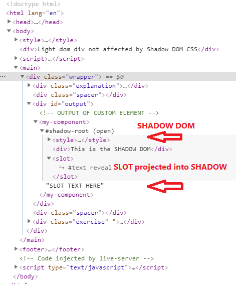

01-shadow-dom
This Light DOM div not affected by Shadow DOM CSS
We will look at CSS later but we can see in this example that the CSS for the component is scoped and does not bleed out.
We will look at slot text in a couple of lessons.
We now explore the SHADOW DOM.
The SLOT text is part of the LIGHT DOM and gets projected into the SHADOW DOM.
The Web Component is now just a regular Light DOM element so slot text is in the Light DOM.
